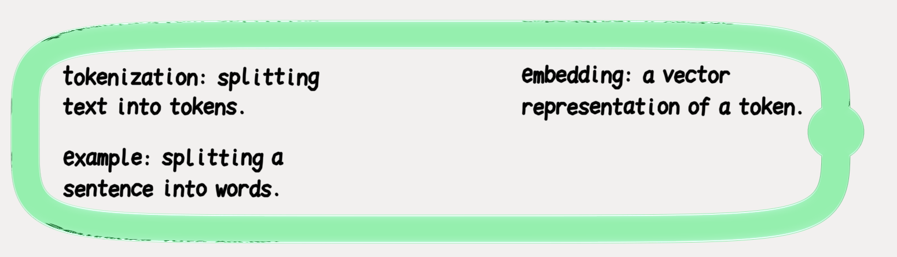

Buko
On-device RAG powered by Apple Foundation Models in a notebook
Local RAG supplies source content to Apple Foundation Models to complete notes in your handwriting


Answer (more) Questions
Work through problems
Complete definitions
(And check out that multitasking!)
RAG over the notebook’s PDFs
When a PDF is added to a notebook, PDFKit extracts the text from each page and Vision reads text in images. Buko indexes each passage with its source PDF and page number.
When you circle something in your notes, Buko searches that index for both the circled text and the content the planner identifies as missing.
BM25 ranks word matches
Terms count for more if they only appear in a few passages. BM25 also accounts for passage length and gives each repeated mention of a term less weight. In the original query, terms in the circled text have 4 times the weight of terms the planner adds.
Cosine similarity ranks meaning
Apple’s Natural Language framework splits passages into sentences with NLTokenizer. Its English sentence embedding maps the search query and up to 16 sentences per passage to vectors. Buko then takes the highest cosine similarity across those sentences. A short heading like “Tokenization:” can imply a request for a definition.
Reciprocal-rank fusion
Buko sorts eligible passages once by BM25 and once by cosine similarity. Each positive score contributes 1 / (60 + rank) from its list. Adding these together rewards passages that rank well in both searches. BM25 can still retrieve passages if an English embedding is unavailable.
How the planner searches for missing information
In the attention heads demo, Buko searches the passages twice. The first query uses the circled text and the planner’s intent, and the second query uses the target subject (gap.retrievalText) and the detail the planner says is missing (gap.expansion).
Run both searchesGapRetrieval.swift
let original = LectureRetrieval.search(
passages: passages, selected: selected, intent: intent,
queryVector: originalVector, method: method)
let targeted = LectureRetrieval.search(
passages: passages, selected: gap.retrievalText, intent: gap.expansion,
queryVector: targetVector, method: method)Attention heads demo
- Circled question
- “How are attention heads combined?”
- Original search: 1×
- Embed the full question.
- Targeted search: 2×
- Embed “attention heads”. Keep “combined” for keyword matching.
The targeted search gets twice the weight of the original.
What the model sees
In the NLP lecture notes demo, the student circles “How are attention heads combined?”
Plan the fill
Planning inputPrompt from the demo
Plan an action for selected_handwriting in this notebook data:
{
"nearby_handwriting_context_only": "Add position to each token embedding. self-attention mixes values across tokens. One query gives one weighted sum.\n",
"selected_handwriting": "How are attention heads combined?"
}Planner outputRecorded response fields
{
"intent": "The user wants to understand how attention heads combine.",
"action": "Add a short explanation of attention head merging beneath Attention Heads."
}Find supporting evidence
Retrieval planRecorded fields
{
"targets": [{"blockID": "S1", "quote": "How are attention heads combined?"}],
"subjectQuotes": ["attention heads"],
"informationNeeds": ["How are attention heads combined?"],
"alreadyCovered": []
}Evidence decisionRecorded fields
{
"status": "directAnswer",
"sourceIDs": ["P1"]
}Write the cited answer
Writer inputWriter input from the demo
{
"selected_handwriting": "How are attention heads combined?",
"approved_source_ids": ["P1"],
"approved_lecture_passages": [{
"id": "P1",
"text": "Heads can represent different relationships between tokens. Concatenate their outputs and project back to the model dimension."
}]
}Writer outputFinal answer in the demo
{
"sourceIDs": ["P1"],
"text": "Attention heads are combined by concatenating their outputs and projecting back to the model dimension."
}How the planner uses handwriting layout and spacing to find gaps
Circled content is grouped into regions by vertical spacing and horizontal overlap, and the planner groups each region's text to work out which details are part of each topic.
What the planner receives
{
"selected_regions": [
{"regionID": "G1", "content": [
{"id": "S1", "text": "Tokenization: splitting text into tokens."},
{"id": "S3", "text": "Example: splitting a sentence into words."}
]},
{"regionID": "G2", "content": [
{"id": "S2", "text": "Embedding: a vector representation of a token."}
]}
]
}
The planner sees that the example is for tokenization, while embedding is missing an example and needs one supplied.
Other cool stuff I tried
Custom LoRA adapters
I started with training custom LoRA adapters for Apple’s system model. But Apple ended support for this toolkit with the release of iOS27 so I moved on to trying open weight models through Core AI.
Qwen through Core AI
I converted Qwen3 models through Core AI, Apple's framework to run third party models on Apple silicon, and tested them locally.
The 4-bit 4B version of Qwen3 passed 9/12 difficult cases versus Apple’s 7/12, but 22/34 across the full suite versus Apple’s 29/34. I kept Apple’s system model.